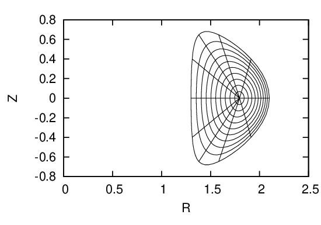
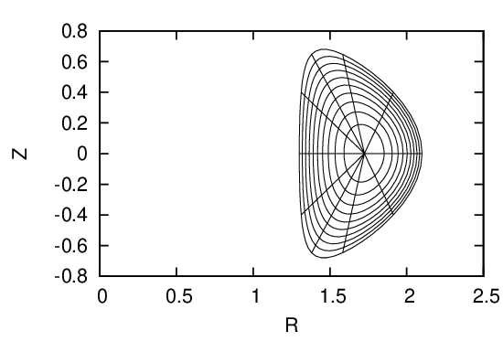

 

Fig. 30: Upper left figure plots the initial coordinate surfaces. After solving the GS equation to
obtain the location of the magnetic axis, I shift the origin point of the initial coordinate system
to the location of the magnetic axis (upper right figure). Then, reshape the coordinate surface so
that the coordinate surfaces ψ = const lies on magnetic surfaces (middle left figure). Recalculate
the radial coordinate ψ that is consistent with the Jacobian constraint and interpolate flux
surface to uniform œà coordinates (middle right Ô¨Ågure). Recalculate the poloidal coordinate ùúÉ that
is consistent with the Jacobian constraint and interpolate poloidal points on every flux surface
to uniform ùúÉ coordinates (bottom left Ô¨Ågure).